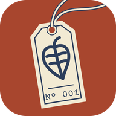

Standard Botanical

Standard Botanical
Standard Botanical keeps a care schedule for each of your houseplants and tells you which ones need you today.
Care schedules and reminders
Watering, fertilizing and repotting, each on its own schedule for each plant, slowing down in the dormant months. Around 09:00 a note says what your plants need today, and around 20:00 a reminder follows if watering or fertilizing is still waiting.
The Plantdex
Every plant you add is recorded in your Plantdex. Each entry has the plant’s origin, family and care, and whether the ASPCA lists it as toxic to cats and dogs.
Private by design
No account, no ads, no analytics. Your plants and photos are kept on your phone.
Questions, or a plant you’d like added: support@standardbotanical.com